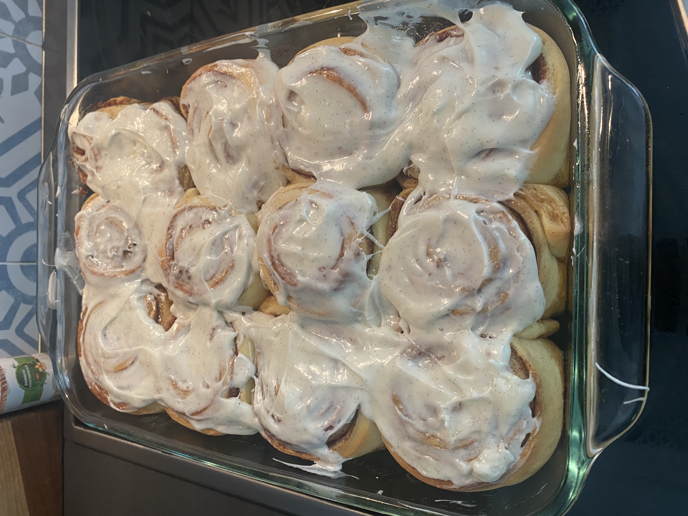

Cinnamon Buns

Description
Ingredients
Tangzhong
- 25g All-Purpose Flour
- 125g Milk
Dough
- 555g All-Purpose Flour
- 107g Granulated Sugar
- 6g Salt
- 84 Unsalted Butter
- 110g Lukewarm Milk
- 7g Instant Yeast
- 2 Eggs
- 1 Egg Yolks
Filling
- 227g Brown Sugar
- 17g Ground Cinnamon
- 84g Softened Unsalted Butter
Vanilla Bean Cream Cheese Glaze
- 113g Cream Cheese
- 90g Powdered Sugar
- 0.5 Vanilla Bean
- 3 Tbsp Milk
Steps